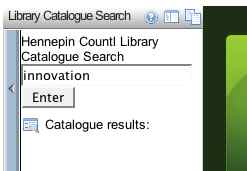
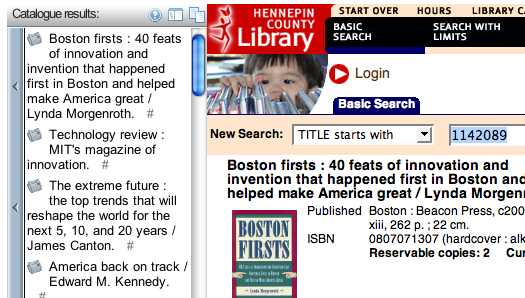
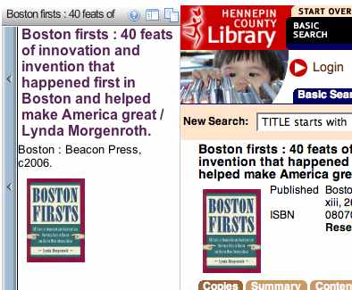

One of the things I've been trying to figure out for Stringle is how to get search forms into the OPML fed navigation widget. RSS feeds can carry form elements, which was how I was going to try and address the problem.
But no need - because today Grazr announced GrazrScript, "a programming language for feeds".
At its core GrazrScript runs against a web service that parses the special GrazrScript directives embedded in the files to do interesting things and returns valid OPML or Feed files. GrazrScript 1.0 allows the embedding of XHTML forms, and a 'search and replace' template that, while relatively simple, enables all sorts of interesting applications.
Here's a v quick demo, in StrinGLE, of using GrazrScript to provide a search in Grazr over the Hennepin County Library, which has an OpenSearch/RSS interface to its Library Catalogue - GrazrScript library catalogue search in StrinGLE.
Here's the top level navigation - you can see the link to the library catalogue search area:
Here's the search box:

Make a search - note you can also click through to get the result in the main web window:

If you prefer, check out the search result in the Grazr widget:

It'll be interesting to see how GrzrScript develops, but this is a really good start :-)
Now I wonder, is there a SPARQL results to RSS stylesheet out there anywhere?
PS I just pinched the code for a more complex (job search) form involving several form elements, including drop down lists, from the Eirepreneur blog, and added it to the demo...
Job ads are potentially a good fit for open educational sites (targeted at adult learners) that need to pay their way with advertising, or affiliate/commission/referral fees, I think...? (Though note that that's not how they're being used here...)
Posted by ajh59 at November 5, 2006 06:31 PM